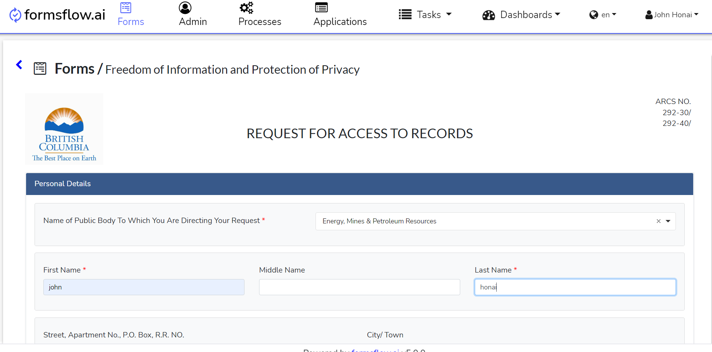

<article class="docs-article">
    <section  class="docs-section" id="draft">
        <div>
            <h1>Draft feature</h1><br><hr>
            <p>Draft feature has been implemented to save and track unfinished applications.</p>
            <h4>Use case:</h4>
                
            
            <p>
                1.If there is a large form to submit and the user does not have the sufficient information at the time
                of filling.
            </p>
            <p>
                2.If a power failure or network failure happens during form filling, data might be lost in such cases.These
                circumstances can be avoided by saving the form as draft.
            
            <p>
                3.Users have the option to save a draft and submit the form later.
                
            </p>
            <h4>Features:</h4>   
        
            <ol>

                <li>The draft feature is totally customizable. By altering the configuration, this feature can be
                    disabled if a given installation doesn't require it.

                <li>The polling rate is also configurable.

                <li>Works for anonymous users and multitenant environments.
                </li>
            </ol><br>
            <h3>1. Autosave of submission data</h3><br>


            <p>The submission data will automatically be saved to the Draft table once the user takes the form for
                submission.
            </p>


            <br>

            <br><br>

            <h3>2. Continue with the form</h3>


            <p>The forms which are not submitted/unfinished applications will appear in the <strong>Drafts
                </strong>tab.</p>

            <p>
                <br>

                <br>
            <p>Users can continue filling out the form by clicking the Edit button.
            </p>
            <br>


            <br><br>

            <div class="callout-block callout-block-info">
                <div class="content">
                    <span class="callout-icon-holder me-1"></span>

                    <i class="fa fa-bullhorn"></i>

                    <em> NOTE: Once the user submits the form, the form is moved to the Applications Tab from
                        Drafts</em>

                </div>

            </div>
            <br>


            

           <br><br>
        </div>
    </section>
</article>